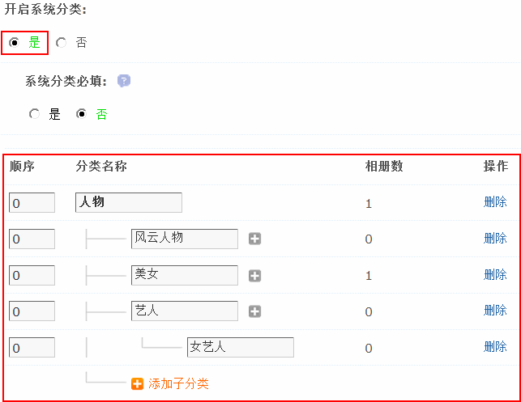
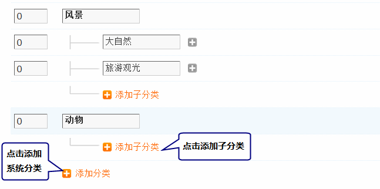
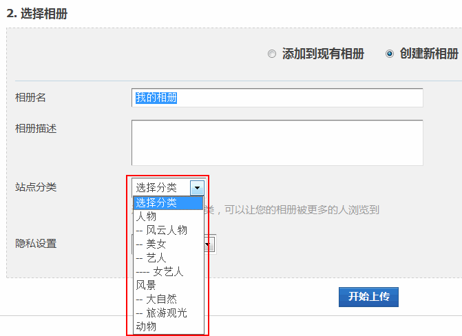
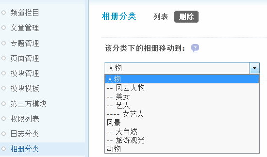
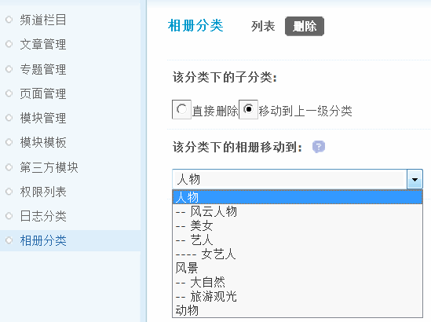

相册分类
相册分类可以设置用户在建立相册时选择的系统相册分类，最多可以设置三级分类。在设置相册分类之前，必须要选择开启系统分类。有了系统相册分类后，会员上传图片的时候可以不用自己添加分类直接选择系统分类。选择一个系统分类，可以让会员的相册被更多的人浏览到，增强站点内会员之间的互动性。
操作路径：【后台】=>【门户】=>【相册分类】
开启系统分类：选择“是”将开启系统相册分类功能，选择“否”则不开启相册分类，会员创建相册的时候将没有分类。
系统分类必填：选择“是”创建相册的时候，必须选择一个系统分类才可以。
一、添加系统分类、子分类
点击“添加分类”链接即可
添加子分类和添加分类的方法一样，分类添加好以后，会员创建相册的时候就可以选择相册分类了
二、删除系统分类、子分类
当对某一系统相册分类进行删除时，可以选择将此分类下的相册移动到其他相册分类中。如果该分类下存在子分类，还需要处理子分类，可以选择把子分类直接删除或是移动到上一级分类。
删除分类如下图所示：
可以选择将此分类下的相册移动到其他相册分类中，然后再删除。
分类下有子分类的情况如下图所示：
可以选择把子分类直接删除或是移动到上一级分类。